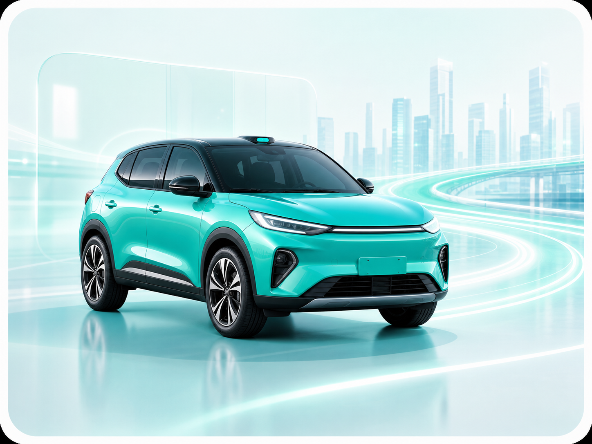
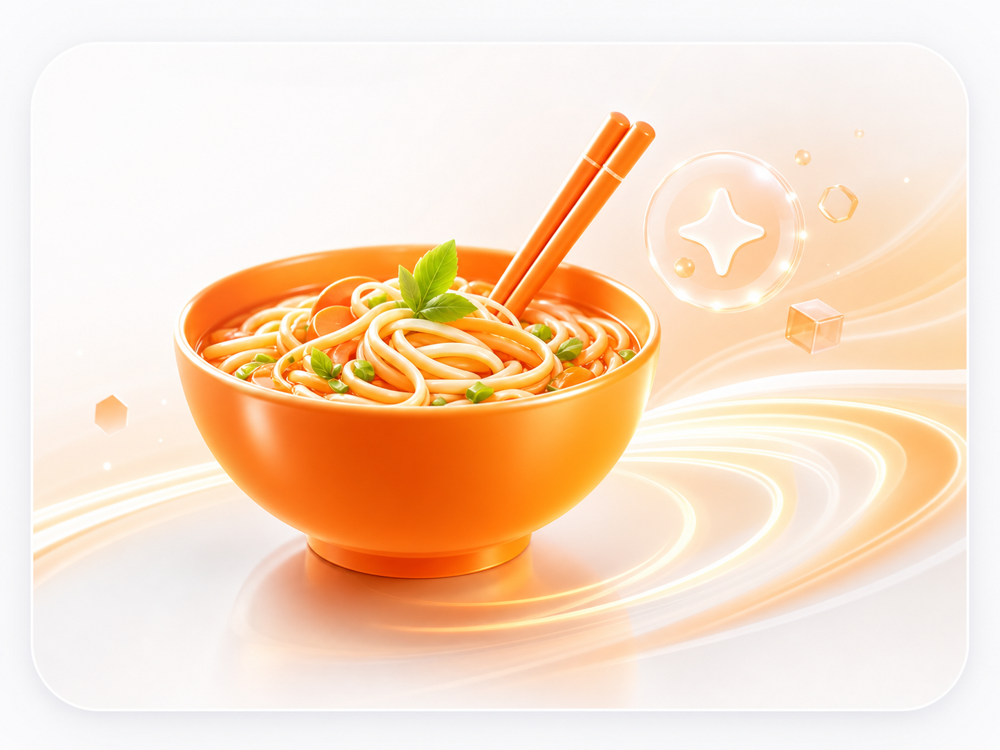
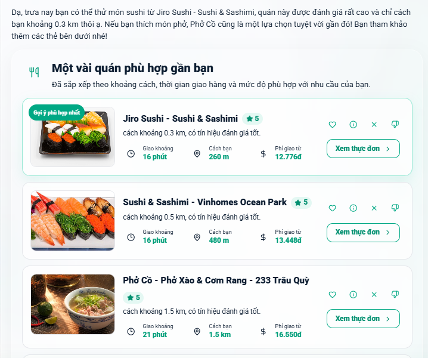

Knowledge Search
Tra cứu tri thức, chính sách, nội dung vận hành và tài liệu nội bộ.
Một trợ lý hội thoại cho hệ sinh thái Xanh SM: hỏi đáp tri thức, hiểu ngôn ngữ tự nhiên, gợi ý theo ngữ cảnh và vận hành có đo lường.
Assistant không chỉ trả lời câu hỏi. Hệ thống gom nhiều năng lực vào một trải nghiệm thống nhất để người dùng hỏi bằng ngôn ngữ tự nhiên và nhận phản hồi đúng ngữ cảnh.
Tra cứu tri thức, chính sách, nội dung vận hành và tài liệu nội bộ.
Tổng hợp nhiều nguồn, giữ trích dẫn và lý do trả lời rõ ràng.

Hỏi đáp về dòng xe, dịch vụ, trải nghiệm di chuyển và hệ sinh thái.
Giải thích giá cước, ưu đãi và điều kiện áp dụng theo tình huống.
Cập nhật tin tức, tóm tắt điểm đáng chú ý và biến động thị trường.

Gợi ý món/quán theo khẩu vị, vị trí, ngân sách và ngữ cảnh hội thoại.
Hỗ trợ chính sách, điều khoản, câu hỏi thường gặp và CSKH.
Theo dõi chất lượng, trace, latency, feedback và tín hiệu cải thiện.
RAG answer và Food recommendation cùng chạy trong một assistant, cùng được trace, đánh giá và tối ưu theo dữ liệu vận hành.
Eval tập trung vào độ bám tài liệu, độ đúng câu trả lời, tốc độ phản hồi và khả năng mở rộng domain. Food dùng cùng lớp NLU để hiểu khẩu vị, địa điểm, ngân sách và ràng buộc của người dùng.

NLU là lớp đọc ý định, chuẩn hóa câu hỏi và điều phối domain. Nhờ lớp này, người dùng không cần nhớ cú pháp; họ chỉ cần nói tự nhiên, assistant tự hiểu cần hỏi RAG, gợi ý món ăn hay truy vấn thông tin khác.
Nhận diện câu hỏi chính sách, xe, giá cước, tin tức, food hoặc câu hỏi ngoài phạm vi để chọn pipeline phù hợp.
Viết lại câu hỏi mơ hồ thành truy vấn rõ nghĩa, giữ ngữ cảnh hội thoại và chuẩn hóa thuật ngữ Xanh SM.
Tách địa điểm, ngân sách, khẩu vị, món muốn ăn, loại xe, thời gian và các điều kiện người dùng nhắc tới.
Điểm khác biệt không nằm ở một câu trả lời riêng lẻ, mà ở cách assistant hiểu ý định, chọn nguồn dữ liệu, giữ trace và cải thiện chất lượng qua từng phiên bản.
| Năng lực | Chatbot phổ thông | RAG thông thường | Xanh SM AI Assistant |
|---|---|---|---|
| Xử lý câu hỏi tự nhiên | Nhận diện theo từ khóa tĩnh, dễ sai lệch hoặc báo lỗi nếu người dùng gõ câu dài, nói lóng. | Hiểu ngữ nghĩa tốt nhưng chủ yếu dùng để tìm kiếm tài liệu thay vì bóc tách yêu cầu phức tạp. | NLU thông minh bóc tách chính xác ý định (intent), trích xuất điều kiện (slot) và nhớ ngữ cảnh hội thoại. |
| Đa nhiệm & Nghiệp vụ | Chỉ trả lời được kịch bản FAQ cố định, không lấy được dữ liệu động từ hệ thống. | Chỉ mạnh về đọc hiểu tài liệu văn bản, khó kết hợp logic nghiệp vụ (như gợi ý món ăn, giá cước). | Tích hợp Đa Engine (Kiến thức, Food Recommendation, Tin tức) để xử lý chéo nhiều luồng dịch vụ. |
| Kiểm soát & Vận hành | Hoạt động như "hộp đen", khi trả lời sai kỹ sư rất khó truy vết nguyên nhân để sửa chữa. | Có trích dẫn nguồn tài liệu nhưng thiếu hệ thống đánh giá chất lượng tự động (Eval) liên tục. | Vòng lặp Ops (Trace & Eval) ghi log mọi suy luận, giúp đo lường RAGAS và tự động cải tiến tức thì. |
| Trải nghiệm khách hàng | Giao tiếp rập khuôn, máy móc, thường bắt ép người dùng phải bấm chọn menu tĩnh. | Văn phong AI khô khan giống "bách khoa toàn thư", thiếu sự đồng cảm và cá nhân hóa. | Tư vấn chuẩn văn phong CSKH, cá nhân hóa theo profile và luôn định hướng rõ hành động kế tiếp. |
Pipeline được thiết kế theo lớp: gateway bảo vệ đầu vào, NLU hiểu ý định, các engine xử lý domain và lớp ops/eval đóng vòng cải thiện chất lượng.
Text, ảnh, voice, file upload và ngữ cảnh phiên chat.
Lịch sử hội thoại, user profile, vị trí và trạng thái tác vụ.
Guardrail, semantic cache, chuẩn hóa input và quyết định fast-path.
Intent classification, query rewrite, slot extraction, domain routing và entity normalization.
BM25 + vector search, reranking, table-aware chunks và answer synthesis.
Profile, retrieval, ranker, constraints và lý do gợi ý theo khẩu vị.
Log, latency, feedback, golden dataset và RAGAS evaluation.
Giải quyết bài toán giới hạn Context Window bằng cách không nhồi nhét lịch sử thô. Phân tách trí nhớ thành đa tầng, kết hợp Context Builder để giữ prompt luôn tinh gọn, giảm latency và tối ưu cá nhân hóa.
Giữ 5-10 lượt chat gần nhất để NLU hiểu đại từ (như "nó bao tiền?").
Nén phiên chat dài thành các insight có cấu trúc (mục tiêu, quyết định).
Nhớ vĩnh viễn sở thích, vị trí, thói quen để không phải hỏi lại nhiều lần.
Retrieval & lắp ráp các mảnh bộ nhớ liên quan kết hợp với RAG Document thành một Prompt động tinh gọn, giải phóng giới hạn Context Window.
Tăng tốc độ phản hồi (Latency) bằng cách cache các cấu trúc prompt tĩnh (system prompt, rules).
Sinh câu trả lời chính xác, cá nhân hóa cao với lượng token tiêu thụ ít nhất.